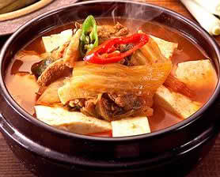

KIM-CHI CHI-GAE
Ingredients
- 1 cup of kimchi, 16 oz pork belly (or any part with fat), thin sliced (uncooked bacon can be used as a substitute)
- 2 green onions, slice in a bias
- ½ pack tofu (dooboo)
- 2 kochu (hot green chili), chopped
- 2 tbsp gochujang (red chili pepper paste)
- 1 tbsp gochugaru (red chili pepper flakes)
- 2 tbsp minced garlic
- 1 tsp soy sauce
- 3 cups water
- Salt & pepper
Directions
- Place a pot on the stove, turn the heat on. Add pork belly (or bacon), sauté for a minute or so.
- Add gochujang and cook until meat becomes white.
- Pour the water, add kimchi. Bring to a boil, reduce to simmer.
- Add soy sauce, gochugaru, and garlic. Cook for 20-30 minutes.
- Add chilies, green onions, salt and pepper. Cook for another minute.
- Serve with rice.
Go Back!